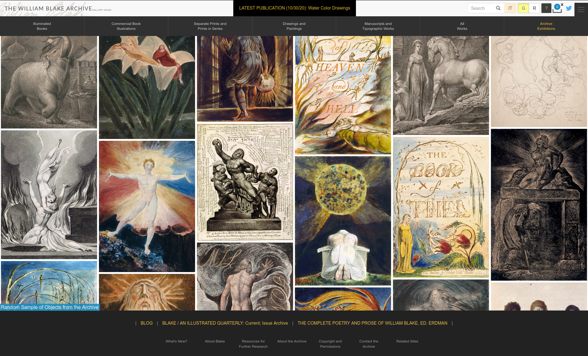

<!doctype html>
<html lang="en">
<head>
<meta charset="utf-8">
<!-- CUSTOMIZE THIS! -->
<title>Einführung in die Digital Humanities</title>
<meta name="author" content="Christof Schöch">
<!-- END -->
<meta name="description" content="Slides">
<meta name="apple-mobile-web-app-capable" content="yes">
<meta name="apple-mobile-web-app-status-bar-style" content="black-translucent">
<meta name="viewport" content="width=device-width, initial-scale=1.0, maximum-scale=1.0, user-scalable=no, minimal-ui">
<link rel="stylesheet" href="css/reveal.css">
<link rel="stylesheet" href="css/theme/simple.css" id="theme">
<!-- Code syntax highlighting -->
<link rel="stylesheet" href="lib/css/zenburn.css">
<!-- Printing and PDF exports -->
<script>
var link = document.createElement( 'link' );
link.rel = 'stylesheet';
link.type = 'text/css';
link.href = window.location.search.match( /print-pdf/gi ) ? 'css/print/pdf.css' : 'css/print/paper.css';
document.getElementsByTagName( 'head' )[0].appendChild( link );
</script>
<!--[if lt IE 9]>
<script src="lib/js/html5shiv.js"></script>
<![endif]-->
</head>


<body>
<div class="reveal">
<div class="slides">
<section data-markdown="" data-separator="^\n---\n" data-separator-vertical="^\n--\n" data-charset="utf-8" data-background-image="img/basics/uni-trier-mini.png" data-background-size="60px" data-background-position="top 10px right 10px">
<script type="text/template">
<br/>
## Geschichte der Digital Humanities
<br/>
<hr/>
<br/>
Vorlesung *Einführung in die Digital Humanities*
<br/>
<br/>
Prof. Dr. Christof Schöch
<br/>
Wintersemester 2018/19
<br/>
<hr/>
<br/>
</img>


--
## Semesterüberblick

<small>

* 23.10.: Digital Humanities im Überblick
* 30.10.: Digitalisierung: Text und Bild
* 06.11.: Grundbegriffe des Programmierens
* 13.11.: Datenmodellierung 1: Modellierung
* 20.11.: Datenmodellierung 2: Datenbanken**
* 27.11.: Datenmodellierung 3: Text, Markup, XML
* 30.11.: Digitale Edition
* 11.12.: **Geschichte der Digital Humanities**
* 18.12.: Informationsvisualisierung
* 22.12.-6.1.: *Weihnachtspause*
* 08.01.: Natural Language Processing
* 15.01.: Quantitative Analyse 1: Stilometrie, Topic Modeling
* 22.01.: Quantitative Analyse 2: Superv. Machine Learning
* 29.01.: Open Humanities
* 05.02.: Klausurtermin

</small>

--
## Sitzungsüberblick
<br/>
1. Phasen in der Geschichte der DH
    1. Vordigitale Digital Humanities
    2. "Beginnings" (1949 bis 1970er)
    3. "Consolidation" (1970er bis Mitte der 1980er)
    4. "New Developments" (Mitte 1980 bis frühe 1990er)
    5. "The Era of the Internet" (seit den 1990ern)
2. Persönlichkeiten


---
# Vordigitale Digital Humanities

--
## Augustus de Morgan, 1806-1871
</img>
<br/><small>(Quelle: https://commons.wikimedia.org/wiki/File:Augustus_De_Morgan_1850s.jpg, public domain)</small>

--
## Augustus de Morgan, 1806-1871
<br/>
* ausgebildet in Oxford und Cambridge
* Mathematiker, Logiker, Arithmetiker
* beeinflusst von George Boole (Mathematiker, Logiker, )
* erster Präsident der London Mathematical Society
* Lehrer von Ada Lovelace (gilt heute als erste Programmiererin)
* Idee, man könne das Problem der Identifizierung anonymer Autoren mit statistischen Mitteln lösen

--
## 
</img>
<br/><small>(Quelle: Augustus de Morgan. „Letter to Rev. Heald 18/08/1851“. In *Memoirs of Augustus de Morgan by his wife Sophia Elizabeth de Morgan with Selections from his Letters*, London: Longman’s Green and Co., 1882.)</small>

--
## Thomas Corwin Mendenhall, 1841-1924
<br/>
* Amerikanischer Meteorologe
* Drei-jähriger Forschungsaufenthalt<br/> in Japan (Meteorologie, Gravitation)
* Inspiriert von de Morgan: "The Characteristic<br/> Curves of Composition" (Science, 1887)

--
## "The Characteristic Curves of Composition"

<br/><small>(Zwei Verteilungen für *Vanity Fair*.)</small>

--
## "The Characteristic Curves of Composition"
</img>
<br/><small>(Je eine Verteilungen für *Vanity Fair* und *Oliver Twist*.)</small>

--
## Replikation von Rockwell & Sinclair
<br/>
* Geoffrey Rockwell, "Replication as a way of knowing <br/>in the digital humanities" (Vortrag, Würzburg, 2016)
* Rockwell und Sinclair, Jupyter Notebook: <br/>https://github.com/sgsinclair/epistemologica/

---
# "Beginnings" <br/>(1949 bis 1970er)

--
## (1)<br/>Konkordanzen

--
## Roberto Busa, 1913-2011
</img>
<br/><small>(Quelle: https://de.wikipedia.org/wiki/Roberto_Busa#/media/File:Roberto_busa_e_index_thomisticus.jpg, CC-0)</small>

--
## Meilenstein: Index Thomisticus
<br/>
* Vorhaben von Roberto Busa ab ca. 1940
* "Präsenz" bei Aquin: "praesentia" vs. "in"
* Index aller Lemmata im Werk von Thomas von Aquin
* Zusammenarbeit mit Thomas J. Watson, Gründer von IBM
* 56-bändiges gedrucktes Werk; 1992 auf CD, dann online: http://www.corpusthomisticum.org/it/

--
## Konkordanz it. "celestiale" 
</img>
<br/><small>(Quelle: *Concordanza delle opere italiane in prosa e del Canzoniere di Dante Alighieri*)</small>

--
## Lochkarte aus dem Index Thomisticus
</img>
<br/><small>(Quelle: David Bammann, https://twitter.com/dbamman/status/689893013452029955)</small>

--
## corpusthomisticum.org
</img>
<br/><small>(Quelle: http://www.corpusthomisticum.org/it/)</small>

--
## (2)<br/>Autorschaftsattribution

--
## Autorschaftsattribution
<br/>
* Anknüpfend an: de Morgan, Mendenhall, Lutoslawski
* Alvar Ellegard, *A statistical method for determining authorship: the Junius letters*, 1962
* Mosteller and Wallace, "Inference in an Authorship Problem" [zu: *The Federalist Papers*], 1963

--
## The Federalist Papers
</img>
<br/><small>(Autoren: James Madison, John Jay, Alexander Hamilton)</small>

--
## Andere Charakteristika der Zeit
<br/>
* weitere computerbasierte Konkordanzen
* Ressourcen für Wörterbücher, <br/>bspw. *Trésor de la langue Française*
* Von der Lochkarte zum Magnetband
* 1964: erste Konferenz zu Computern und Geisteswissenschaften (IBM)
* 1964-: Centre for Literary and Linguistic Computing (Cambridge)
* 1966-: Zeitschrift *Computers and the Humanities*
* 1973: Konferenzserie *Computer Applications and Quantitative Methods in Archaeology*

---
# "Consolidation"<br/>(1970er bis Mitte 1980er)

--
## Konsolidierung
<br/>
* häufigere Nutzung der in der Frühphase entwickelten Technologien
* mehr Projekte, die dieselben Applikationen nutzen
* vermehrt Anstrengungen in den Bereichen Archivierung, Standards, Nachhaltigkeit
* Erste Institutionalisierungs-Tendenzen

--
## Einige wichtige Events
<br/>
* 1973: Gründung der *Association for Literary and Linguistic Computing* (ALLC)
* 1973: Kolloquium über die Anwendung der EDV in den Geisteswissenschaften (Wilhelm Ott, Tübingen)
* 1976: Gründung des Oxford Text Archive (OTA)
* 1986-: Erscheinen der Zeitschrift *Literary and Linguistic Computing* (LLC)
* 1987: Gründung der Humanist-L durch Willard McCarty: http://dhhumanist.org/


---
# "New Developments"<br/>(Mitte 1980er bis frühe 1990er)

--
## Einige Trends
<br/>
* Professionalisierung: TEI
* Das Zeitalter der Digitalen Edition
* Immer mehr auch größere Textsammlungen
* Der Personal Computer erreicht die Universität


--
## Meilenstein: Text Encoding Initiative
<br/>
* http://www.tei-c.org/index.xml
* Gründungstreffen: 1987
* TEI Guidelines: P1 1990, ..., P4 2002, P5 2007
* 2017: Antonio Zampolli Prize der ADHO

--
## Meilenstein Perseus Digital Library
<br/>
* http://www.perseus.tufts.edu/
* Gegründet 1987 von Gregory Crane
* 69 Millionen Wörter Latein und Griechisch
* 100 Millionen Wörter weitere Sprachen
* Soweit möglich frei und in XML verfügbar


--
## Textansicht auf PDL
</img>

--
## Orte in PDL 
</img>


--
## Digitale Editionen (auf CD-ROM)
<br/>
(Auswahl)
* Electronic Beowulf, siehe jetzt: http://ebeowulf.uky.edu/
* Wittgenstein; siehe jetzt: http://www.wittgensteinsource.org
* Hypernietzsche; siehe jetzt: http://www.nietzschesource.org/


---
# "The Era of the Internet"<br/>(seit den frühen 1990ern)

--
## Einige Entwicklungen
<br/>
* Email und World Wide Web
* Vernetzung, Kollaboration, Netzwerke
* "user-generated content"
* Thematische Archiv-Sites
* "Beyond Text" (Bilder, Dokumente)


--
## Google Books / Google Ngram Viewer
</img>
<br/>https://books.google.com/ngrams/, 2009


--
## Meilenstein: The William Blake Archive
</img>
<br/>http://www.blakearchive.org/, gegründet 1996
<br/><small>Rezension in RIDE: http://ride.i-d-e.de/issues/issue-5/the-william-blake-archive/</small>


--
## Meilenstein: "stylo" for R
</img>
* ab etwa 2010
* https://computationalstylistics.github.io/


--
## Neuere Entwicklungen
<br/>
* Von "Humanities Computing" zu "Digital Humanities"
* Visualisierung, Dynamik, Zeit und Raum
* Mehrsprachigkeit, Globalisierung (Global Outlook: DH)
* Ausdifferenzierte Institutionalisierung<br/>(Studiengänge, Verbände, Zentren, Förderlinien)
* Infrastruktur-Förderung: DARIAH, CLARIN, EOSC (European Open Science Cloud), NFDI (Nationale Forschungsdateninfrastruktur)

--
## Neuere Publikationen
<br/>
* 2004: *Companion to Digital Humanities* (2004)
* 2007: Digital Humanities Quarterly (seit 2016: auch Spanisch, Französisch)
* 2008: Digital Humanities Now (Discovery Service)
* 2012: DH Commons: A Collaboration Hub   
* 2015: Zeitschrift für digitale Geisteswissenschaften
* 2017: *Digital Humanities: Eine Einführung* (2017)

--
## Neuere Verbände
<br/>
* Deutschland: DHd-Verband, http://dig-hum.de
* Italien: AIUCD, http://www.aiucd.it/
* Französischsprachig: Humanistica, http://www.humanisti.ca/
* Spanisch-sprachig: RedHD, http://www.humanidadesdigitales.net/
* Tschechische Republik: CzDHI, https://czdhi.ff.cuni.cz/en/
* Südafrika: DHASA, http://digitalhumanities.org.za/
* Taiwan: TADH, http://tadh.org.tw/en/ 
* ...


---
# Abschluss: Köpfe der DH


--
## Elisabeth Burr
</img>
<br>
* Italienische Linguistik
* European Summer University, Leipzig

--
## Wilhelm Ott
</img>
<br>
* ursprünglich Theologe
* Begründer von TUStep (Tübingen) 

--
## Kurt Gärtner
</img>
<br>
* Mediävist
* Gründer des Kompetenzzentrums (Trier)


--
## Willard McCarty
</img>
<br>
* Philosophie, Wissenschaftsgeschichte
* Humanist-L (1987-); Buch: *Humanities Computing* (2005)

--
## Susan Hockey
</img>
<br>
* Textedition und Textanalyse
* Artikel zur Geschichte der Digital Humanities (2004)


--
## Fragen?

--
## Lektürehinweise
<small>

* Manfred Thaller, "Geschichte der Digital Humanities", in: *Digital Humanities: Eine Einführung*, hg. von Fotis Jannidis, Hubertus Kohle und Malte Rehbein. Stuttgart: Metzler, 2017, S. 3-12.
<br/>
<br/>
**Weitere Empfehlungen**
* Hockey, Susan "The History of Humanities Computing", in: *The Companion to Digital Humanities*, ed. by Susan Schreibman, Ray Siemens and John Unsworth. Oxford: Blackwell, 2008. URL: http://www.digitalhumanities.org/companion/ (kostenfrei)
* Gärtner, Kurt: Die Anfänge der Digital Humanities. In: Akademie Aktuell 1/2016, S. 18‒23. URL:
https://www.badw.de/die-akademie/presse/zeitschrift-akademie-aktuell/einzelartikel-
aa/detail/akademie-aktuell-jahrgang-2016-ausgabe-nr-56.html
* Sula, Chris Allen; Heather Hill. "The Early History of Digital Humanities". 2016. URL: http://chrisalensula.org/the-early-history-of-digital-humanities/
* *Hidden Histories. Digital Humanities from 1949 to the present*. https://hiddenhistories.omeka.net/
<br/>
<br/>
**Darüber hinaus**
* Nyhan, Julianne; Andrew Flinn. *Computation and the Humanities. Towards an Oral History of the Digital Humanities*. Cham: Springer, 2016. (Open Access)
* Earhart, Amy E. *Traces of the old, uses of the new: The emergence of digital literary studies*.
Ann Arbor : The University of Michigan Press, 2015.


</small>

--
## Nächste Sitzung
<br/>
* 18.12.2018: "Informationsvisualisierung"
* Vorbereitung: Kapitel 23 im Lehrbuch

---
<br/>
<br/>
<br/>
<br/>
<br/>Christof Schöch, 2018
<br/>http://www.christof-schoech.de
<br/>
<hr/>
Lizenz: [Creative Commons Attribution 4.0](https://creativecommons.org/licenses/by/4.0/)
<br/>


</script>

<!-- DON'T TOUCH UNLESS YOU KNOW WHAT YOU'RE DOING :-) -->
</div>
<script src="lib/js/head.min.js"></script>
<script src="js/reveal.js"></script>
<script>
// Full list of configuration options available at:
// https://github.com/hakimel/reveal.js#configuration
Reveal.initialize({
    controls: true,
    progress: true,
    history: true,
    center: true,
    transition: 'slide', // none/fade/slide/convex/concave/zoom
    // Optional reveal.js plugins
    dependencies: [
        { src: 'lib/js/classList.js', condition: function() { return !document.body.classList; } },
        { src: 'plugin/markdown/marked.js', condition: function() { return !!document.querySelector( '[data-markdown]' ); } },
        { src: 'plugin/markdown/markdown.js', condition: function() { return !!document.querySelector( '[data-markdown]' ); } },
        { src: 'plugin/highlight/highlight.js', async: true, callback: function() { hljs.initHighlightingOnLoad(); } },
        { src: 'plugin/zoom-js/zoom.js', async: true },
        { src: 'plugin/notes/notes.js', async: true }
        ]
    });
Reveal.configure({ slideNumber: true });
</script>
</body>
</html>
